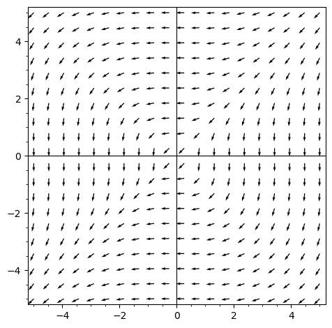
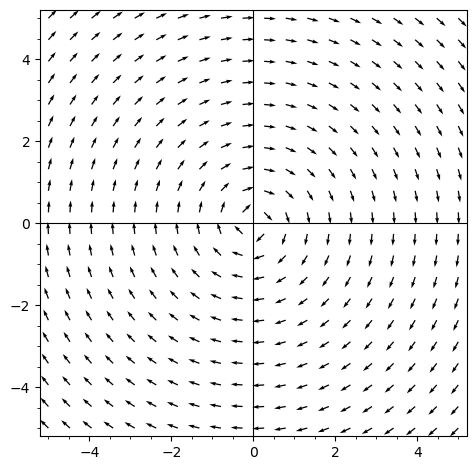
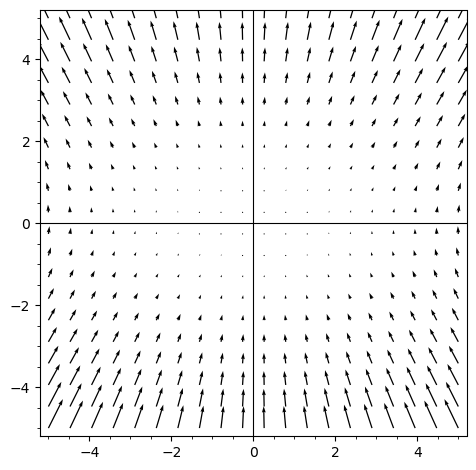
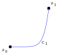
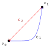

Sketch two different paths from \( (4,4) \) to \((-4,-4)\) with different vector path integrals or show why that can't be done.
Sketch three different paths from \( (4,4) \) to \((-4,-4)\) with different vector path integrals or show why that can't be done.
Sketch three different paths from \( (4,4) \) to \((-4,-4)\) with different vector path integrals or show why that can't be done.
Suppose \(F\) is a vector field with 0 circulation density. Consider the path integral \(\int_{C_1}F\cdot ds\).
What does Greens Theorem say about \(\int_{C_1}F\cdot ds+ \int_{C_2}F\cdot ds\)?
What is the relationship between \(\int_{C_1}F\cdot ds, \int_{C_2}F\cdot ds\)?
Draw some \(C_3\) from \(P_1, P_2\). How do \(\int_{C_1}F\cdot ds, \int_{C_3}F\cdot ds\) compare?
If \(\nabla\times F=0\) then if \(\mathbf{x}_1, \mathbf{x}_2\) are paths with the same start and endpoint. We have: \[\int_{\mathbf{x}_1} F\cdot ds = \int_{\mathbf{x}_2} F\cdot ds.\]
We say \(F\) is path-independent.
Suppose \(F=\nabla f\). We say \(F\) is a gradient field or conservative vector field. Let \(\mathbf{x}:[a,b]\to \mathbb{R}^n\) be \(C^1\) where \(\mathbf{x}(a)=A, \mathbf{x}(b)=B.\)
Then: \[ \int_{\mathbf{x}} F\cdot ds= \int_{\mathbf{x}} \nabla f\cdot ds= \int_{a}^b \nabla f(\mathbf{x}(t))\cdot \mathbf{x}'(t)dt\]
\[= \int_a^b \frac{d}{dt}[f(\mathbf{x}(t))]dt\]
\[=f(\mathbf{x}(b))-f(\mathbf{x}(a))=f(B)-f(A).\]
Let \(F\) be a \(C^1\) vector field with a simply connected domain in \(\mathbb{R}^2\) or \(\mathbb{R}^3\), then \(\nabla \times F=0\) if and only if there is a potential function \(f\) such that \(F=\nabla f\), if and only if \(F\) is path independent. Moreover given any \(\mathbf{x}:[a,b]\to \mathbb{R}^n\) be \(C^1\) where \(\mathbf{x}(a)=A, \mathbf{x}(b)=B\), we have: \[ \int_{\mathbf{x}} F\cdot ds= f(B)-f(A).\]
Let \[F(x,y) = (2x\cos(y), x^2\sin(y) +\cos(y)),\]\[ G(x,y)=(2x\cos(y)+1, -x^2\sin(y) +\cos(y)).\] Which of these vector fields is conservative (has 0 circulation density)?
Find \(\displaystyle \int 2x\cos(y)+1 dx, \int -x^2\sin(y) +\cos(y) dy\).
Find a \(g(x,y)\) so that \(\nabla g = G\).
Let \(\mathbf{x}_1:[0,10]\to \mathbb{R}^2\) be defined as: \(\mathbf{x}_1(t) = (t+1, 0).\) Find \(\displaystyle \int_{\mathbf{x}_1}G\cdot ds\).
Let \(\mathbf{x}_2:[0,10]\to \mathbb{R}^2\) be defined as: \[\mathbf{x}_2(t) = ((t^2-90t)\cos(2\pi t), (t^{26}-4t^{18}+19t^{12})e^{t^8-19t^5+2}\arctan(3t)\sin(2\pi t)).\] Find \(\displaystyle \int_{\mathbf{x}_2}G\cdot ds\).
Let \(F(x,y) = \displaystyle \left\langle \frac{-y}{x^2+y^2}, \frac{x}{x^2+y^2} \right\rangle\).
Compute the circulation density of \(F(x,y)\).
Find \(\displaystyle \nabla\left(\arctan\left(y\over x\right)\right)\).
Directly compute \(\displaystyle \int_C F\cdot ds \) where \(C\) is the curve parameterized by \(r(t)=(\cos(t), \sin(t)), 0\leq t \leq 2\pi\).
Whats up with that?
What exactly is the domain of \(F(x,y) = \displaystyle \left\langle \frac{-y}{x^2+y^2}, \frac{x}{x^2+y^2} \right\rangle\)?